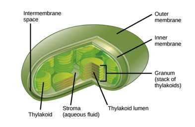

Grade 10 at YHS
Biology 11
Biology 11 aka Life Sciences
Taxonomy
Cladograms
Cladograms are a form of diagram used in Taxonomy.
Cladograms are interestings.
Cladogram this cladogram that.
Characteristics of living orgranisms
MRS GREN
Movement
Respiration
Sensitivity
Grow
Reproduce
Excrete
Noutrition
Origin of Life
Oparin-Haldane Hypothesis
Miller Urrey Experiment
Eukaryotic cells
animal cell
cell membrane
lysosomes
nucleus
nucleois
nuclear membrane
vacoule
mitochondria
centriole
rough endoplasmic reticulum
smooth endoplasmic reticulum
cytoplasm
ribosomes
golgi body/aparatus
plant cell
cell membrane
lysosomes
nucleus
nucleois
nuclear membrane
vacoule
mitochondria
centriole
rough endoplasmic reticulum
smooth endoplasmic reticulum
cytoplasm
ribosomes
golgi body/aparatus
chloroplast
cell wall
Prokaryotic cells
free-floating dna
ribosomes
cell wall
cell membrane
Different Kinds
coccus
bacillus
spirillum
Bio cladogram questions
When a question asks for the most recent hypothetical common ancestor of 2 organisms...
you must remember to circle the knode
and not the actual name of the organism.
Follow the lines of the 2 organisms and find where the 2 organsims meet and it should be a knode.
where they intersect and it should be a knode.
Another thing is, if the organism is close to the given questions organism...
do not
circle it as its actually the one at the end that is more closely related
Photosynthesis
Autotroph VS. Heterotroph
Autotrophs : self feeding
obtain carbon from carbon dioxide
phototrophs: use sunlight
Chemotrophs: extract energy from oxides/nitrates/ammonia etc.
Heterotrophs: obtain carbon from organic molecules (sugars etc.)

photosynthesis uses light to convert water and carbon dioxide into sugars and water
Photosynthesis is a chemical reaction that takes place in the chloroplasts of green plant
cells, where light energy is used to convert carbon dioxide and water into glucose and oxygen.
The word equation for photosynthesis...
carbon dioxide + water light energy/chlorophyll glucose + oxygen
Chemical Equation for Photosynthesis
6CO + 6H2O ----> C6H1206 + 602
Term 1
Unit 1 - Learning Expectations (By the end of this unit you should be able to….)
Origin of life
- State the 7 characteristics that living things share.
- Explain the Oparin-Haldane Hypothesis. What they believed the conditions on earth were at the time life originated and the three steps they hypothesized to have led to the first living organism.
Explain the Miller-Urey experiment. What were they testing? How did they set up their experiment? What did their experiment prove?
Classification
- State that the binomial system of names for species is universal among biologists and has been agreed and developed at a series of congresses.
- Outline the benefits of the binomial system of naming species.
- State that taxonomists classify species using a hierarchy of taxa and when species are discovered they are given scientific names using the binomial system.
- State the 7 taxon developed by Carl Linneaus
- Outline the three domains that all organisms are classified into.
- Construct a dichotomous keys for use in identifying specimens.
- Explain what homologous traits are and explain how they are related to inaccurate classification of species.
- Outline what a cladogram is and what it illustrates.
Construct a cladogram.
- Analyze a cladogram to deduce the evolutionary relationships between related species.
- Explain the domain system of classification
- Outline the difference between the domains
Prokaryotes vs. Eukaryotes
- Compare and contrast prokaryote and eukaryote cells with regard to their structures and the functions of their structures.
- Draw and/or label a diagram of a prokaryotic cell, including the cell wall, plasma membrane, cytoplasm, pili, flagella, ribosomes and nucleoid with naked DNA.
- Draw and/or label a diagram of a eukaryotic cell, including plasma membrane, cytoplasm, ribosomes, nucleus, mitochondria and other membrane-bound organelles.
Photosynthesis
- Define heterotroph and autotroph
- Outline the difference between a phototroph and a chemotroph
- Define photosynthesis. Outline the word and balanced chemical equation for photosynthesis.
- Outline the structure and function of the chloroplast.
- Outline the role and location of chlorophyll
- Outline the wavelengths of visible light that chlorophyll most effectively absorbs and reflects.
- Outline the structure and function of ATP.
- Draw an ATP and ADP molecule
- Outline how temperature, light intensity and carbon dioxide concentration are possible limiting factors on the rate of photosynthesis.
- Explain the graphs plotting the Effect of limiting factors on the rate of photosynthesis
- Outline the steps of the light dependent and light independent reactions of photosynthesis (the electron transport chain and the Calvin cycle) with respect to where in the cell each step occurs and what are the products of these reactions
Cellular Respiration
- Define cell respiration.
- Outline anaerobic respiration.
- Outline lactate production in humans when anaerobic respiration is used to maximize the power of muscle contractions.
- Contrast anaerobic respiration with aerobic respiration.
- Outline the steps of cell respiration (glycolysis, pyruvate oxidation (link reaction), the Krebs cycle and the electron transport chain/chemiosmosis) What is the net ATP and NADP production of each step and where in the cell each step occurs.
- Outline the structure and function of the mitochondrion.